On the right side we find my first exercise in 3D, and on the left the reference that I had to try to reproduce.
 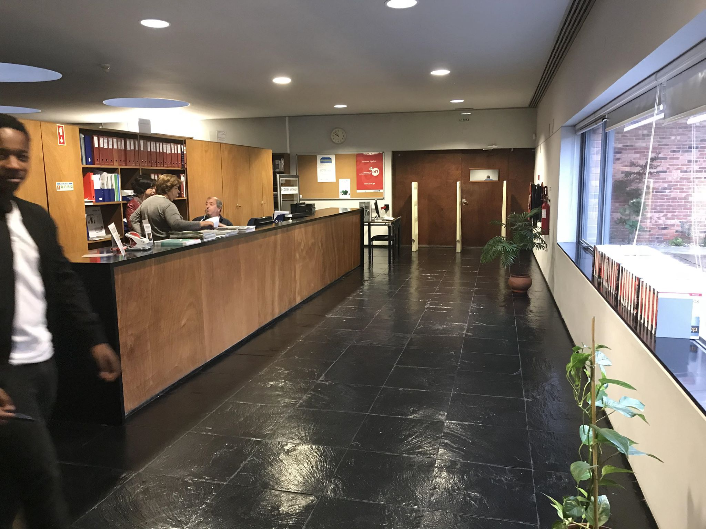
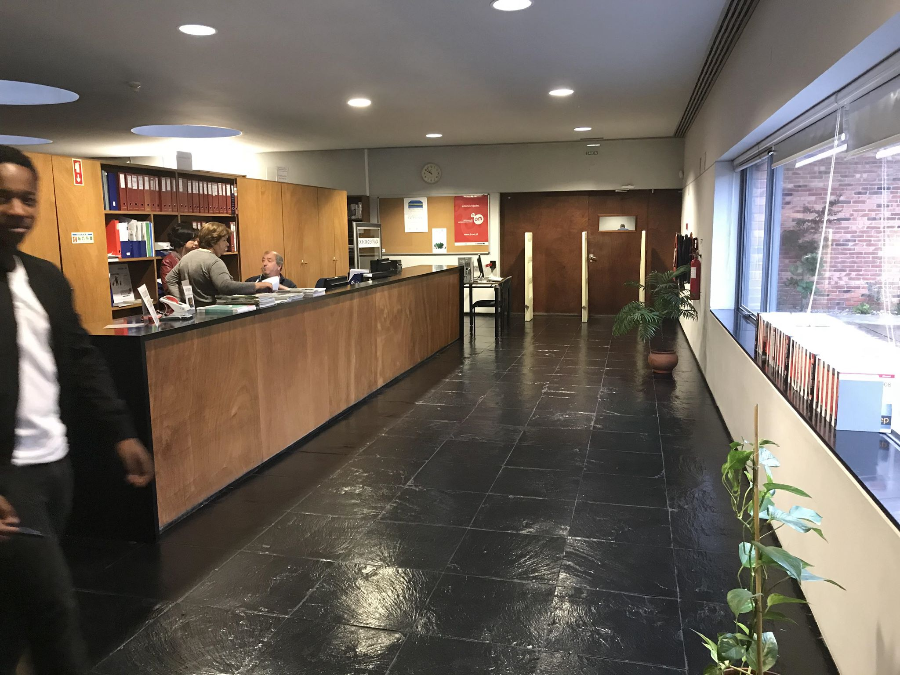
 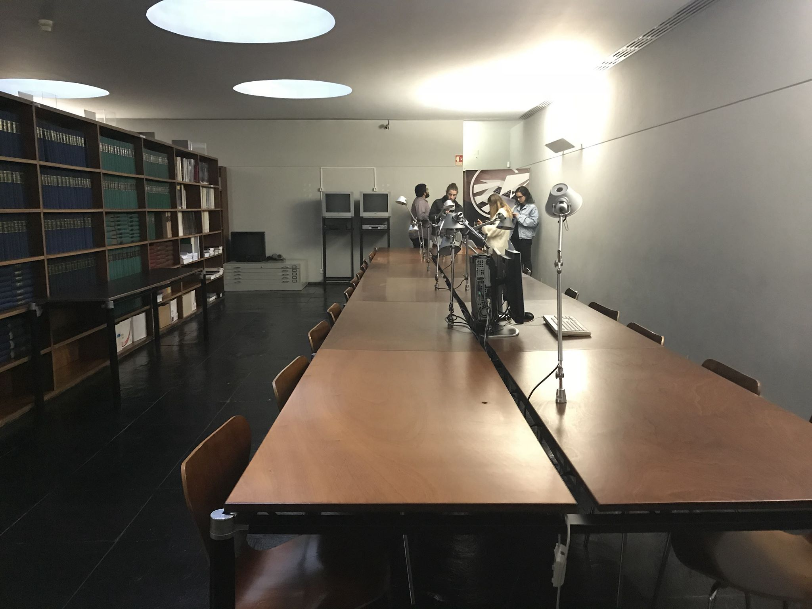
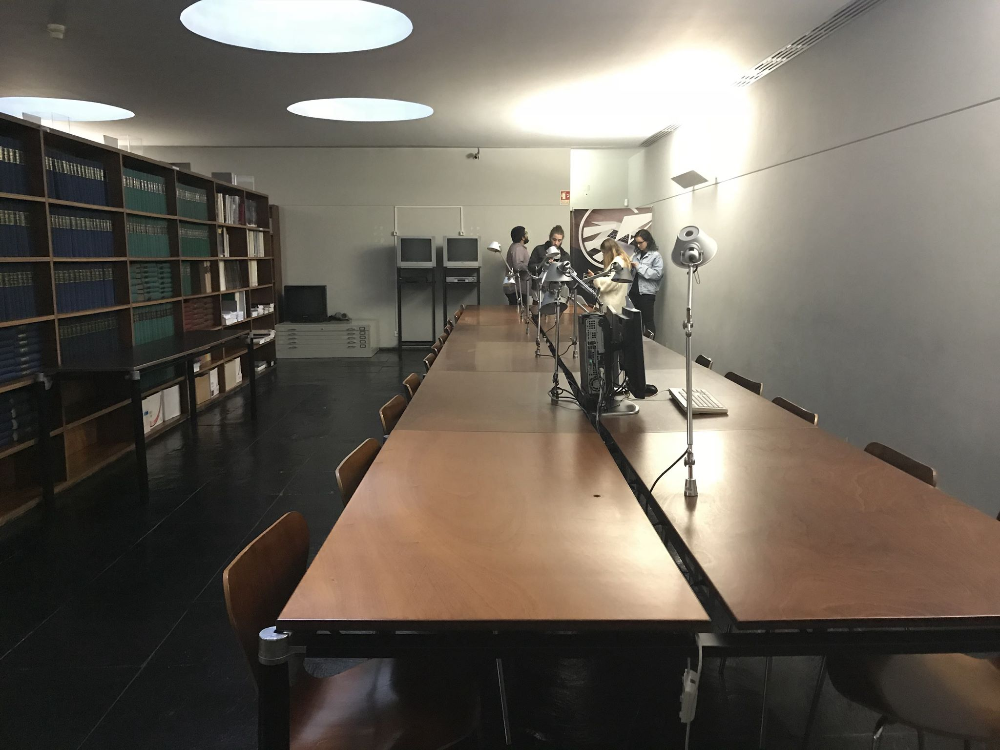
 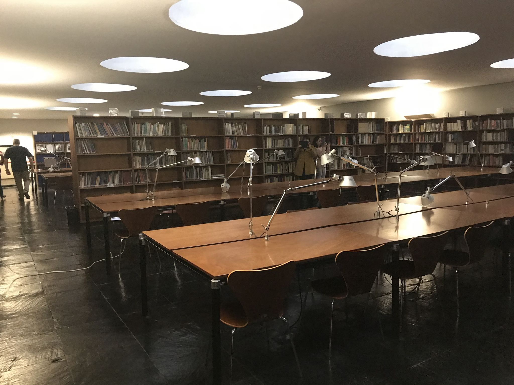
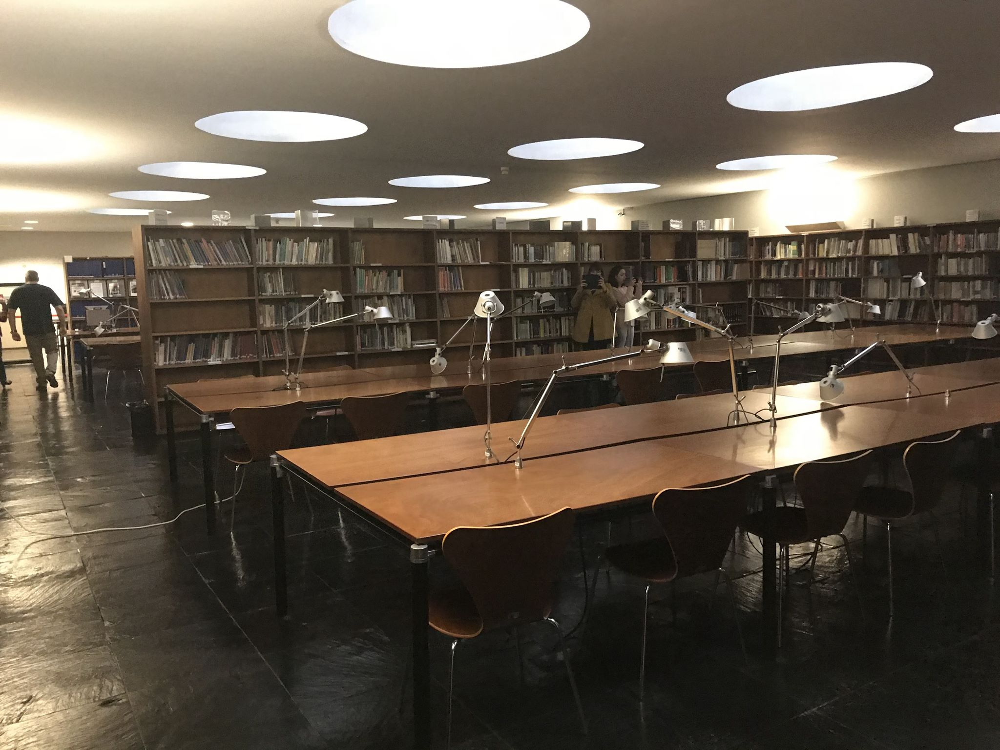
The challenge of this exercise was to recreate a character from the movie 'Ghostbusters', only with 600 triangles and a texture of 256px.
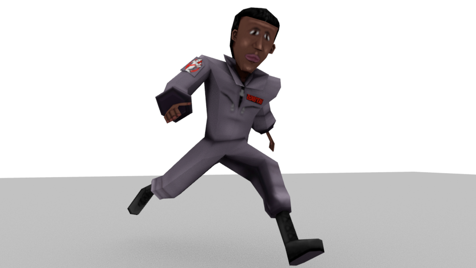 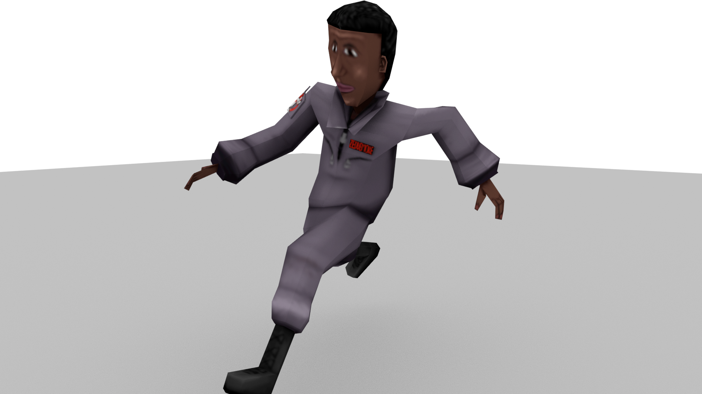A dragonborn, recreated from the game 'Dungeons and Dragons', was the challenge for this exercise. Made with 98k triangles.
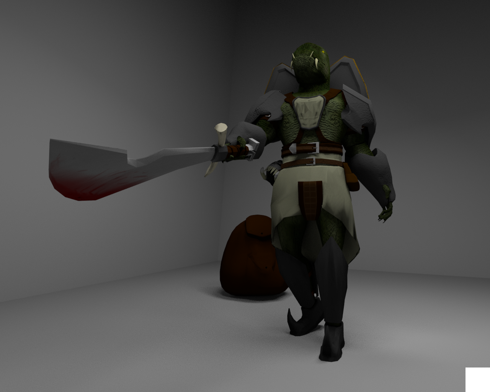 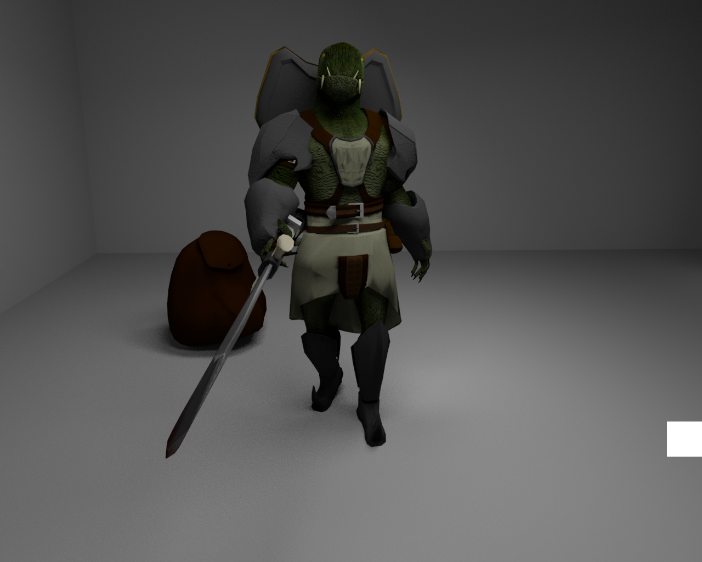 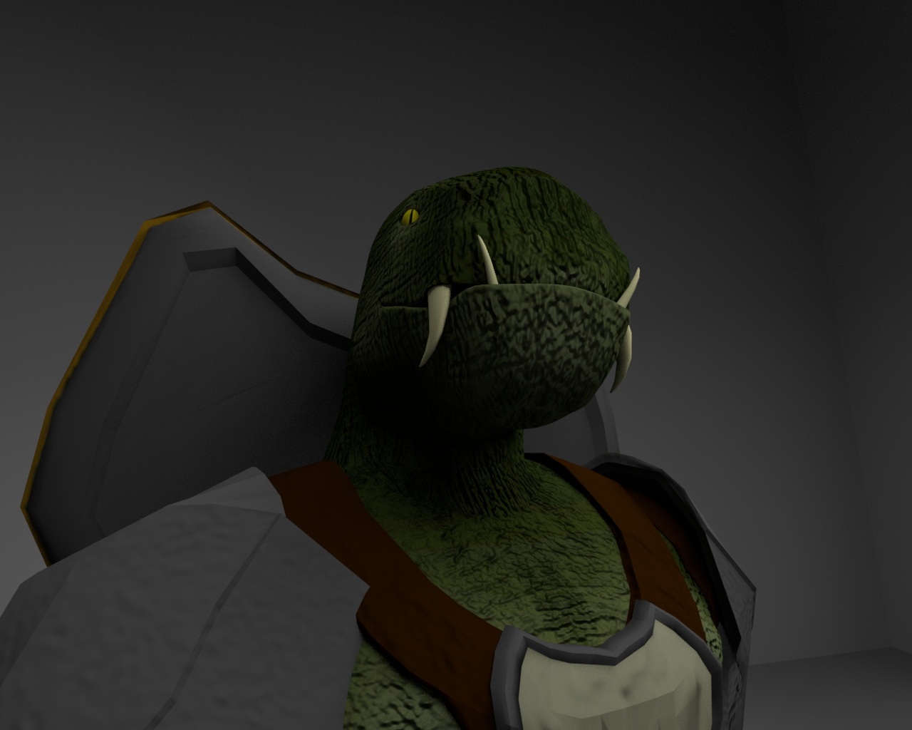 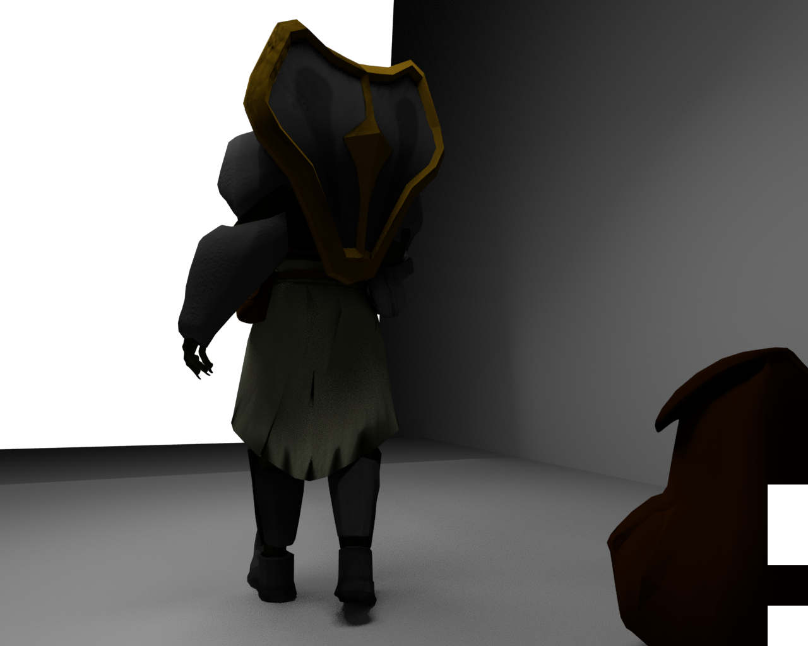 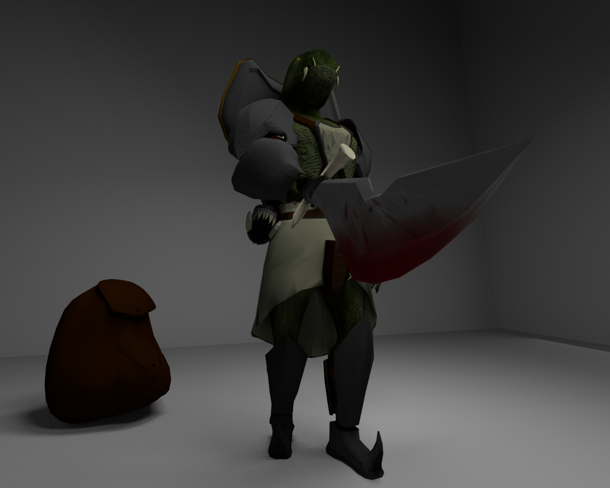 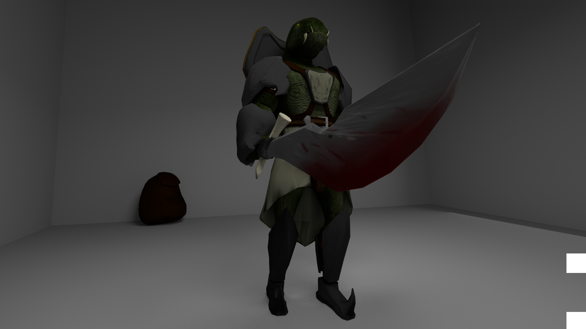